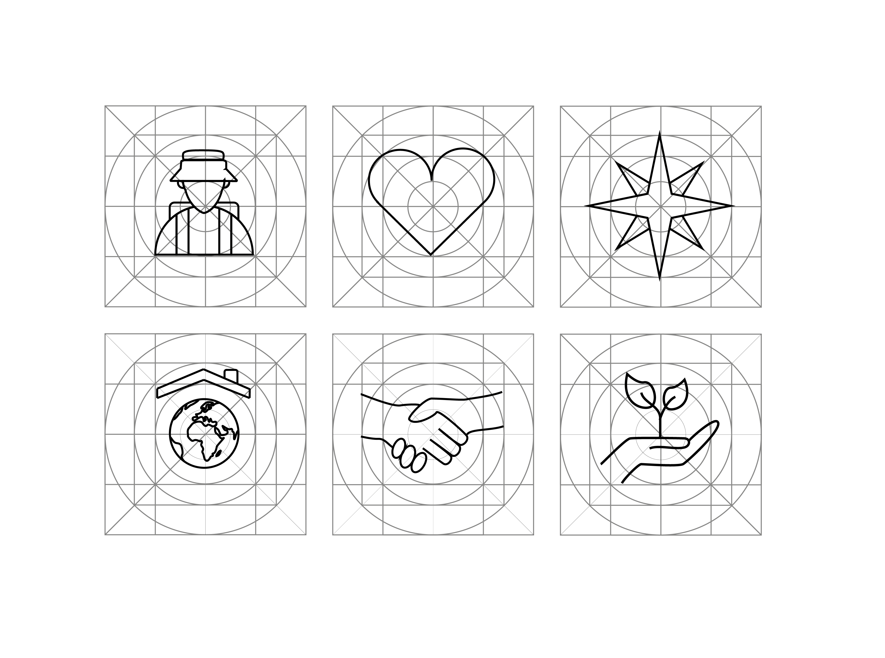
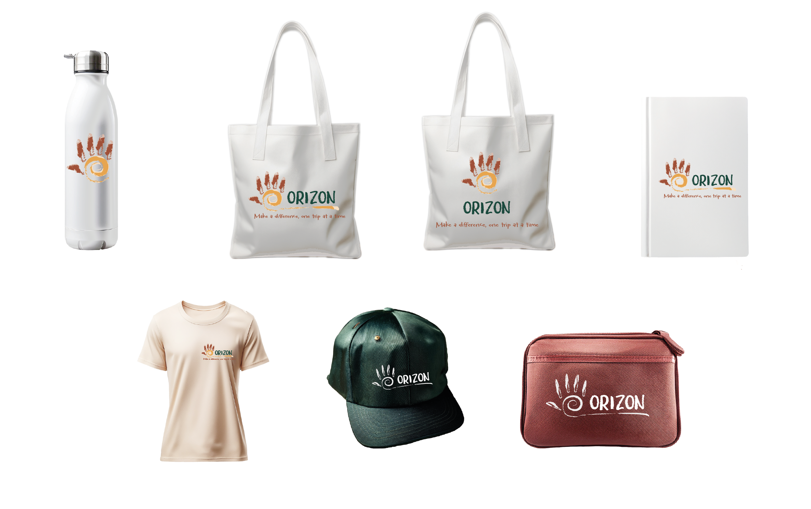

Progettare viaggi memorabili che rispettino l’ambiente e valorizzino le comunità locali.
Torna a Visual & Content Design
BRAND IDENTITY & SOCIAL MEDIA · ORIZON
Un’identità coerente, dal marchio ai contenuti
Orizon è un concept di brand dedicato al turismo responsabile e rigenerativo. Il progetto parte dalla definizione dei valori del brand e li traduce in un sistema visivo riconoscibile, pensato per funzionare dal logo alle applicazioni digitali.
La stessa identità viene poi adattata ai social media, differenziando formati, gerarchie e quantità di informazioni in base al canale e al pubblico, senza perdere coerenza tra i diversi touchpoint.
DAL BRAND AL CONTENUTO
01
Logo & Brand Identity
Concept, sistema visivo e guidelines
02
Social Media
Strategia e contenuti per canale
01 · LOGO & BRAND IDENTITY
Tradurre il viaggio responsabile in un sistema visivo
Orizon nasce dall’idea di promuovere un modo di viaggiare più consapevole, sostenibile e rigenerativo. Il brand mette al centro l’equilibrio tra chi viaggia e le comunità locali, con esperienze pensate per generare valore sia per le persone sia per i territori.
L’identità visiva parte quindi da concetti come connessione, reciprocità, autenticità e rispetto. L’obiettivo non era creare soltanto un marchio riconoscibile, ma un linguaggio capace di mantenere questi valori nei diversi contesti d’uso.
Aiutare le persone a viaggiare in modo più consapevole, sostenibile e rigenerativo.
Qualità, personalizzazione e scambi equi per lasciare un impatto positivo sui luoghi visitati.
CONCEPT DEL MARCHIO
Mano e spirale come simboli di connessione
Il marchio unisce una mano e una spirale solare in un’unica forma. La spirale occupa il centro del palmo, mentre le dita utilizzano tonalità calde e terrose. Il riferimento visivo richiama simboli appartenenti a culture native americane e asiatiche e vuole evocare energia vitale, incontro umano e impronta consapevole.
Il logotipo mantiene un tratto pennellato e spontaneo per comunicare manualità e autenticità; il payoff “Make a difference, one trip at a time” collega invece il viaggio all’idea di cambiamento generato da piccoli gesti.

SISTEMA VISIVO
Un’identità progettata per restare coerente nei diversi touchpoint
Brushberry Sans One per il logotipo, Amatic SC per il payoff, Barlow Condensed per titoli e social e Neue Haas Grotesque Text Pro per i testi di lettura.
Toni naturali e profondi ispirati a terra, legno, vegetazione e luce per esprimere autenticità, sostenibilità e rigenerazione.
Icone disegnate su griglia con tratto brushed per mantenere equilibrio, chiarezza e continuità con il logotipo.


Verde foresta
#1B493D
Ambra dorata
#E6A44F
Terra bruciata di Siena
#A05138
Sabbia del Marocco
#96704C
Legno d’Amazzonia
#5B2C10
ACCESSIBILITÀ & GUIDELINES
Proteggere leggibilità e riconoscibilità del marchio
I colori del brand sono stati verificati rispetto ai criteri WCAG per mantenere una leggibilità adeguata nei principali abbinamenti.
Il logo viene applicato su fondo bianco o su una superficie brushed bianca quando è sovrapposto a fotografie.
Sfondi cromaticamente complessi o privi di un’area di contrasto, che riducono leggibilità e riconoscibilità.
SISTEMA FINALE
Un’identità progettata per essere applicata
01
Brand system
02
Social content system
02 · SOCIAL MEDIA CONTENT DESIGN
Adattare il contenuto al pubblico e alla piattaforma
La comunicazione social mantiene il sistema visivo del brand, ma evita di replicare lo stesso contenuto su ogni piattaforma. Formato, quantità di testo e gerarchia cambiano in base al modo in cui le persone fruiscono Facebook, Instagram e YouTube.
L’obiettivo è costruire riconoscibilità senza sacrificare la funzione del singolo canale: informazione più esplicita su Facebook, visual autentici e sintetici su Instagram, narrazione più lunga e approfondita su YouTube.
Messaggi chiari e informazioni direttamente disponibili nel post, con maggiore spazio alla componente esplicativa.
Estetica autentica, colori naturali e pochi elementi grafici, privilegiando immagini meno costruite e più immersive.
Vlog, racconti personali e contenuti tematici su cultura, sostenibilità e turismo responsabile.
OUTPUT PER CANALE
Stessa identità, formati e obiettivi differenti
Cover e immagine profilo, post di presentazione brand 1200×630 px e contenuti verticali 1080×1350 px per eventi e viaggi.
Post 1080×1350 px dedicati al brand, ai viaggi e agli eventi, con immagini immersive e informazioni essenziali.
Profilo e cover del canale, più anteprime video 1280×720 px per vlog e contenuti di approfondimento.
PRINCIPIO TRASVERSALE
Coerenza non significa uniformità.
Logo, palette e tono visivo mantengono il brand riconoscibile; ciò che cambia è il modo in cui il contenuto viene gerarchizzato e presentato, così che ogni piattaforma svolga una funzione specifica.